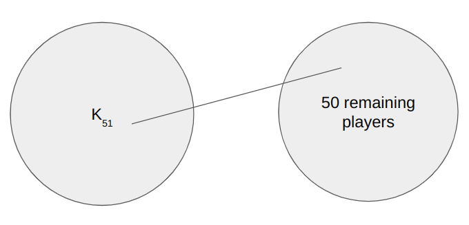

Problem. In a tennis academy of 101 players, for every group of 50 players there exists a player outside the group who has played against every player in the group. Prove that there is a player who has played against all 100 others.
We solve this using a process similar to induction, building up a clique one player at a time.
Start with two players \(A\) and \(B\). Assume \(A\) belongs to some arbitrary group of 50 players, and that \(B\) is the player outside that group who has played against everyone in it — so in particular, \(A\) and \(B\) have played each other.
Now consider a group of 50 players containing both \(A\) and \(B\). By the problem's condition, there must be a player \(C\) outside this group who has played against every member. Since \(A\) and \(B\) are already in the group, \(C\) has played both of them. Combined with \(A\) and \(B\) having played each other, the three players \(A\), \(B\), \(C\) have all played each other — they form a \(K_3\).
We repeat: place \(A\), \(B\), \(C\) into any group of 50 and find a new player \(D\) outside it who has beaten everyone in the group. Since \(A\), \(B\), \(C\) are all in the group, \(D\) has played all three, and they've all played each other, so \(\{A,B,C,D\}\) is a \(K_4\).
Continuing this process, each step adds one new player who has played against everyone in the current clique, growing it by one. After 48 more steps we arrive at 51 players who have all played each other: a \(K_{51}\).
Now consider the remaining 50 players in the academy (those outside the \(K_{51}\)). They form a valid group of 50, so there must exist a player outside this group who has played against all of them. The only players outside this group of 50 are the 51 members of our clique. Therefore, at least one member of the \(K_{51}\) has played against all 50 remaining players. But every member of the \(K_{51}\) has also played against all other 50 members of the clique. That player has therefore played against all 100 others in the academy. \(\blacksquare\)
